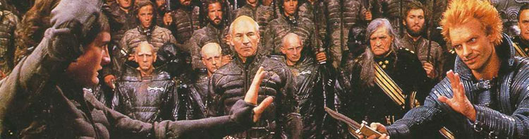
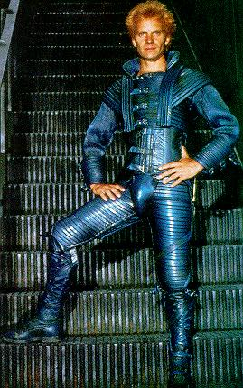
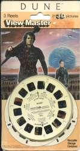
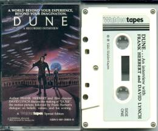

|
Dune Without reading earlier drafts, Lynch went to work on a screenplay capable of satisfying his vision. "The most difficult aspect of course, was being true to the whole," he remarked in Prevue magazine. "I couldn't reduce it to the point where the story's essence is lost - millions of fans would feel raped!" The four-year production expanded to include Sting, Kyle Maclachlan, Patrick Stewart, Alicia Witt, Max von Sydow, Dean Stockwell, Sean Young, Jack Nance, and an uncredited cameo by Lynch as a Spice worker. After reviewing the finished project, Lynch was so horrified by his efforts that he lobbied to have his name removed from the credits altogether. The actors and actresses appeared embarrassed just standing there, and numerous elements of the film dripped with unintentional homoeroticism worthy of The Ambiguously Gay Duo. Production assistants quietly wondered amongst themselves if they weren't just collaborating to manufacture more of Frank Herbert's Dung. Even Sting's opinion of the film slowly morphed over time as he came to realize Dune would be inextricably linked to his reputation and career: September, 1983: "I met David and I loved him. He's a madman in sheep's clothing, and I just felt I had to do the movie because I know he's going to do something extraordinary." July 1985: "I didn't even like the film, I don't have a clue what it was about, it was very confusing." November 1987: "I refuse to take responsibility for any film I'm in. It's the directors movie." May, 1998: "There's no actor who's been in nothing but great movies, nothing but successes. You can make a few lousy movies in relative obscurity." April, 1998: "I was flicking through the channels in a hotel room in the Midwest. Suddenly there they were, the flying underpants. They were great but very tricky to get on under your flares. I still don't actually know what Dune was about and I don't know if anyone did." "I started selling out on Dune," Lynch recalls. "Looking back, it's no one's fault but my own. I probably shouldn't have done that picture, but I saw tons and tons of possibilities for things I loved, and this was the structure to do them in. there was so much room to create a world. But I got strong indications from Dino De Laurentiis of what kind of film they expected, and I knew I didn't have final cut. And little by little - and this is the danger, because it doesn't happen in chunks, it happens in the tiniest little shavings, little sandings - little by little every decision was always made with them in mind and their sort of film. Things I felt I could get away with within their framework. So it was destined to be a failure, to me." To this day, the only people who claim Dune is a great movie are those who developed a grade-school fondness for the series of novels. Abstract rumors regularly circulate in excitable chat rooms and sci-fi conventions: have you heard about the four hour version? The six hour version? What about the director's "choice cut" ten hour version? The legacy of Dune includes eight sequels (by Frank Herbert, his son Brian and other authors), two television miniseries on the SciFi channel, five computer games, countless Marvel comics, action figures, birthday party plates, board games, and Viewmaster discs. "In retrospect," laments Lynch, "I can see that I started getting into trouble with Dune early on, and it wasn't just the final editing that did it, although I think the film could be way, way of better. I still worry that I don't know if it could ever be a great film, or even a real good film. I don't know. I forget so much about it." |